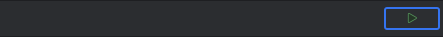
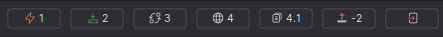

Kubernetes Dashboard Plugin
Kubernetes Dashboard Plugin
Execute to following steps to install Kubernetes Dashboard Helm Chart and use the Kubernetes Dashboard Web UI:
Connect to cluster
- Connect to the cluster.

After connected to cluster
- 
- 1 Prime the cluster. Creates Service Account, Cluster Role Binding and a (token) Secret in kubernetes-dashboard namespace.
- 2 Install the Kubernetes Dashboard Helm Chart to deploy Kubernetes Dashboard Web UI.
- 3 Port forward 8443:8443 from the Kubernetes Dashboard POD.
- 4 Open Kubernetes Dashboard in this tool window. This also copies the required token to the clipboard.
- 4.1 Copy the token to clipboard.
- -2 Optionally, undeploy the Kubernetes Dashboard Helm Chart.
- When done disconnect from the cluster.